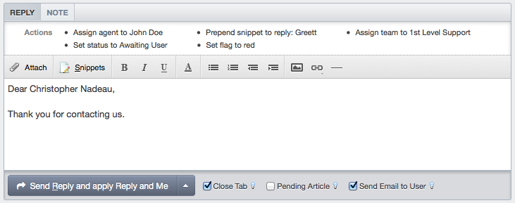
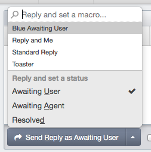
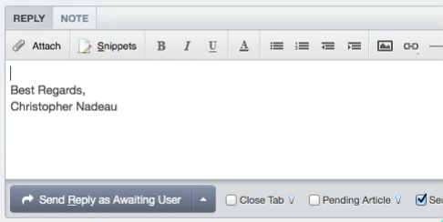

The new replybox has been redesigned from the ground up to make it easier and faster to write replies and apply actions.

When you reply, you have an option of which reply action you want to apply. By default this simply changes the ticket status according to the admin-defined defaults. But you may also choose a macro to apply instead.

The reply box has also been improved with the new snippet shortcut codes features that lets you type special codes that expand into your defined snippet text.

To further improve your workflow, you can use the new keyboard shortcuts to activate any of these features.
shift+r: Puts your cursor into the reply box
alt+r: Sends your reply
alt+s: Opens the snippets directory
alt+o: Opens the reply actions menu
alt+u: Sets the reply action to Awaiting User
alt+a: Sets the reply action to Awaiting Agent
alt+d: Sets the reply action to Resolved
Note: For Mac users, use ctrl instead of alt.